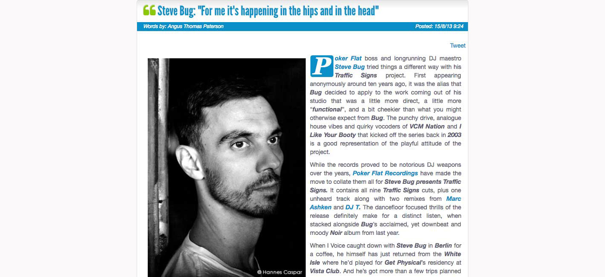

Steve Bug: "For Me it's Happening in the Hips and in the Head"
{kind=link}

Poker Flat boss and longrunning DJ maestro Steve Bug tried things a different way with his Traffic Signs project. First appearing anonymously around ten years ago, it was the alias that Bug decided to apply to the work coming out of his studio that was a little more direct, a little more “functional”, and a bit cheekier than what you might otherwise expect from Bug. The punchy drive, analogue house vibes and quirky vocoders of VCM Nation and I Like Your Booty that kicked off the series back in 2003 is a good representation of the playful attitude of the project. While the records proved to be notorious DJ weapons over the years, Poker Flat Recordings have made the move to collate them all for Steve Bug presents Traffic Signs. It contains all nine Traffic Signs cuts, plus one unheard track along with two remixes from Marc Ashken and DJ T. The dancefloor focused thrills of the release definitely make for a distinct listen, when stacked alongside Bug’s acclaimed, yet downbeat and moody Noir album from last year.
When Ibiza Voice caught down with Steve Bug in Berlin for a coffee, he himself has just returned from the White Isle where he’d played for Get Physical’s residency at Vista Club. And he’s got more than a few trips planned back for the rest of the season.We chatted with Mr Bug to find out more about the Traffic Signs release, to get his musings on Ibiza this year, as well as glean his wisdom on topics like digital distribution, his ‘smooth’ approach to DJing, as well as shifts in the approach to the craft he’s seen over the years.Have you thought about starting your own Poker Flat residency in Ibiza? I think it’s pretty tough these days to run a showcase over there. Seven days a week, and there’s at least two or three parties in that space that are worth going to. And then they already have some of the bigger nights, which are always going to attract a lot of people. And that’s another thing, when I’m thinking the clubs that exist there, the only one I could think of that Poker Flat would fit into would be Sankeys. For me though, part of the fun of going to a sunny island like that is actually going to the big clubs. And I can’t really see myself programming one of these big room shows. Solomun I’ve heard actually works very well at a big club like Pacha. Guy Gerber I heard wasn’t working out quite as well, until the last time I was there. I think it’s difficult at a club like Pacha; I can’t really see them changing too much, and Pacha has always been the posh club that attracts a lot of table service, and they’re gonna sit there in their VIP lounge behind the dancers. It’s not really what we’re looking for with the label.
Let’s talk about Traffic Signs. What inspired you to put this release out at the moment? We’ve been thinking of doing a proper release like this for quite a long time. I think the first Traffic Signs release came out around ten years ago, and a lot of people have still actually been playing them. They were all digitally available, though we never really promoted them.
I actually found a track that I never put out, a track that was meant to be Traffic Signs, though I never ended up releasing it. I talked to the label, and they said they’d already been thinking about putting together a proper release that would pull them all together. Especially for the bigger stores like iTunes, where a single 12” release doesn’t really make sense. It would be a shame for this kind of music to slip by, so we decided to do it.
What was your initial inspiration to release the Traffic Signs material underneath a different alias? At the time, I liked to occasionally produce music that was a little different from my normal working process. Most of those tracks I wrote in the one day, very easy, simple and functional. And the idea of releasing it underneath a different name at that time was to see how many people you can reach, without actually putting your name on it. What’s happening out there? Nowadays though, it’s completely different.
Back then, there was a time that if you had your name on it, then people would buy it. But now, sometimes a big name won’t sell, and you can have a smaller name and it’ll sell heaps. It changed a bit, which is a good thing I think as it’s more unpredictable now.
I tried something similar later on, only three or four years ago, with the Loop Hotel series. And since the digital world took over, it’s very hard to distribute that kind of stuff, it’s hard to reach to the crowd. And you can understand how hard it must be for some young artists to get into the market. Even if the music is great, and it’s something that might work, to actually get to that point… If you’re not releasing on a big label, or you don’t have a big name already, it can be very difficult.
You have some great examples of three of four artists who came together and founded a label, and with all the energy they put into it, they could build up something special and people would finally go for it. But if you’re just one person, and you don’t really have the people around you, it’s very difficult to get into this market because there’s too much music out there.
I’m sure you’re being flooded with a lot of material labelled as ‘Deep House’ at the moment. There’s a lot of good new material out there, though a lot of it is perhaps different from the classic understanding of what deep house is. It comes back to kind of a problem with digital distribution. With an online shop, you have a limited amount of genre categories, and then when this new stuff comes in, it has to be filed under something. And then there’s more and more of this kind of music, and suddenly you have a new trend. In the past, the media would have thought of a new trend - but now they see it as deep house. The sound might be something new that just wasn’t there before, but in terms of how it’s classified, a lot of it is still being filed under deep house. This creates a roadblock for the classic deep house sound, because you can’t cut through anymore, it’ll never make it into the top ten. This is especially true when you’re talking about a super-hyped sound, which is always going to sell more.
Looking at your approach to DJing, one of the most memorable aspects is how polished you are in your presentation. How neat the transitions are, how carefully considered the programming is. It’s even been said your approach is “too good”. There might be a point there. I think it gets to a point where, if you stay in the same key for a long time, and if you stay in the same genre, if the mixes are too smooth… For some people, it could be too clean. I do a very smooth transition from one track to the next, and I don't think that everybody understands this approach. Some people need the one track that comes in at a different key, much louder than the first, and then you can see the reaction. And I think it’s more difficult to get that reaction without going for the full on ‘bam’. That’s why I think for some people it can be too clean, too similar.
Some of my favorite DJ sets though are when someone is playing classic deep house, very hypnotic, with no transitions, in the same key, it just little waves up and down in the tracks. I love that, and I could be for 12 hours on the dancefloor without leaving. But that’s maybe just me. For me, if the next track bangs in like that, I feel this has disturbed my musical journey on the dancefloor. For me it’s happening in the hips and in the head, but for a lot of people I think it’s more about the big breaks, and the big buildup. I think over the years in general, to really enjoy and pay attention to what’s happening, and to be there in the music… I think this is something that has gotten lost in a lot of places around the world.